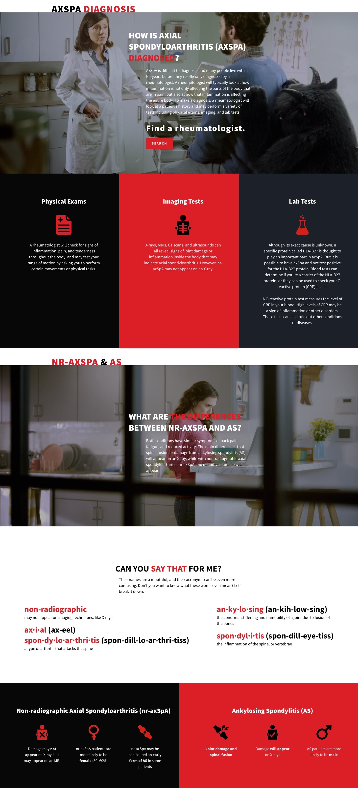

Educating patients about Ankylosing Spondylitis
Content Strategy / Design / Product Management
Ankylosing Spondylitis (AS) is a hard to diagnose condition and many people confuse it with inflammatory back pain (IBP).
Novartis Pharmaceuticals wanted to launch an unbranded campaign to help educate around this condition. Specifically, they hoped to use a quiz to provide guidance and motivate patients to speak with their doctor.
Impact
- 127,000+ quiz completions since launch
- Work mentioned in Parade, People, MSNBC, Fox News, etc.

